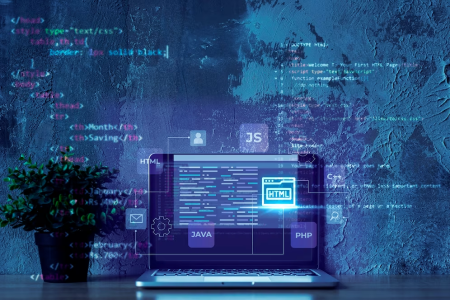
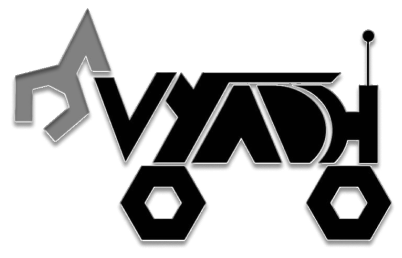

ELECTRICAL DOMAIN
Comprising a dynamic team of 12 experts, our Electrical Domain is the driving force behind the rover's capabilities. Specializing in diverse tasks such as Traversal, Robotic Arm, PCB Design, Power Distribution, and cutting-edge Sensor Integration, our electrical engineers bring innovation to every circuit. From enabling smooth traversal to crafting intricate robotic movements, and from designing advanced PCBs to ensuring efficient power distribution, our Electrical Domain is the lifeline that powers the rover's functionality with precision and reliability.

About Us
Welcome to Team Vyadh, a dynamic group of 56 like-minded students hailing from SEDS-VIT Projects at Vellore Institute of Technology (VIT), India. Specializing in the design and construction of Mars Rovers, our team is driven by a collective passion for innovation. With a focus on advancing science and technology, we excel in robotic-arm engineering, autonomous traversal, and state-of-the-art communication and data acquisition systems for the exploration of the Red Planet. Our proven track record includes participation in prestigious competitions such as URC, IRDC, ERC, and IRC, where we consistently demonstrate our expertise and absorb valuable insights from the forefront of the field. Join us on this exciting journey as we continue to push the boundaries of space exploration and leave an indelible mark on the world of robotics and technology.
THE TEAM
MECHANICAL DOMAIN
Our team of 9 experts in the Mechanical Domain is the driving force behind the physical prowess of the rover. From crafting the sturdy Chassis to ensure smooth Suspension, designing the Differential, and mounting the Motor and Wheels with precision, we cover it all. The team's expertise extends to the versatile Robotic Arm and the specialized Science Kit. We don't just stop at hands-on work; we run simulations to ensure everything works seamlessly. In a nutshell, we're the ones responsible for putting the rover together, making sure every part fits perfectly for optimal performance.
SCIENCE DOMAIN
Comprising 7 committed members, our Science Domain is on a mission to determine the existence of life beyond our planet. Specializing in performing tests dedicated to detecting signs of life, our scientists operate at the frontier of exploration. Through meticulous analyses and cutting-edge experiments, this team is dedicated to answering the questions: Is there life out there? Did life ever exist before? With expertise and precision, our Science Domain pioneers the quest for extraterrestrial existence, setting the standard in competitions and pushing the boundaries of scientific exploration.

SOFTWARE & AUTONOMOUS DOMAIN
With a team of 11 skilled members, our Software Domain is a powerhouse of innovation. Within this domain, we specialize in two key sub-domains—ground Control Station (GCS) and Autonomous Systems. GCS is the communication hub, establishing a seamless link with the rover and taking charge of control. The Autonomous team pioneers the realm of self-sufficiency, ensuring the rover executes tasks autonomously, making intelligent decisions without human intervention. Our software experts drive the technological backbone, orchestrating a symphony of precision and autonomy.
MANAGEMENT DOMAIN
Our Management Team, consisting of 6 dedicated members, is the backbone of seamless operations. With a focus on team coordination, they expertly handle the intricate art of team management. From curating compelling content to showcasing our endeavors on social media platforms, their role extends to securing vital sponsorships. These adept individuals not only keep the team organized but also ensure our mission gets the visibility it deserves, creating a bridge between our endeavors and the world. The Management Team: where strategy meets execution for a successful journey.
Reach Out
Follow Us

Contact Us

teamvyadh33@gmail.com
+91 9827036208